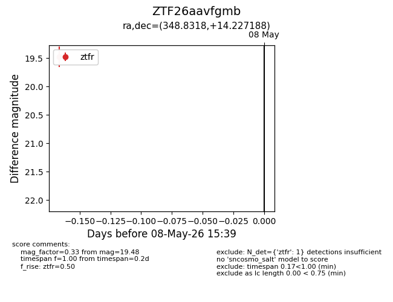
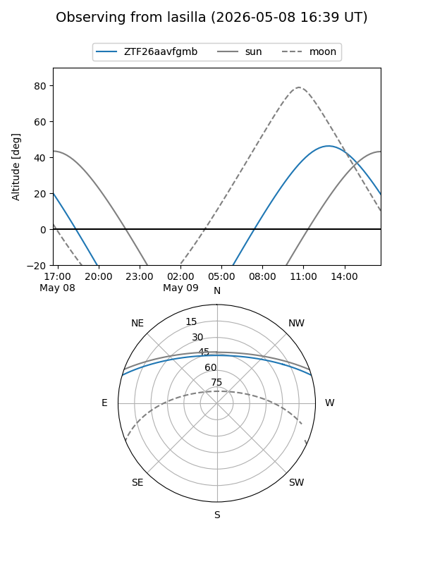
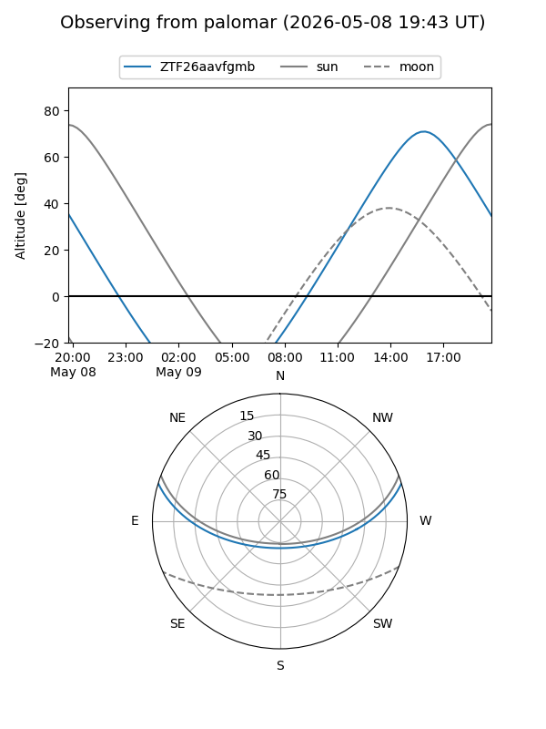

ZTF26aavfgmb
Target ZTF26aavfgmb at 2026-05-08 15:41
Aliases and brokers:
FINK: link
Lasair: link
ALeRCE: link
alt names
ZTF26aavfgmb (ztf,fink_ztf)
Coordinates:
equatorial (ra, dec) = 348.8318,+14.22719
equatorial (HMS+DMS) = 23:15:19.63,+14:13:37.88
galactic (l, b) = (90.5527,-42.52191)
Flags:
Photometry:
last ztfr=19.48
1 ztfr detections
Lightcurve

Visibility


Additional plots